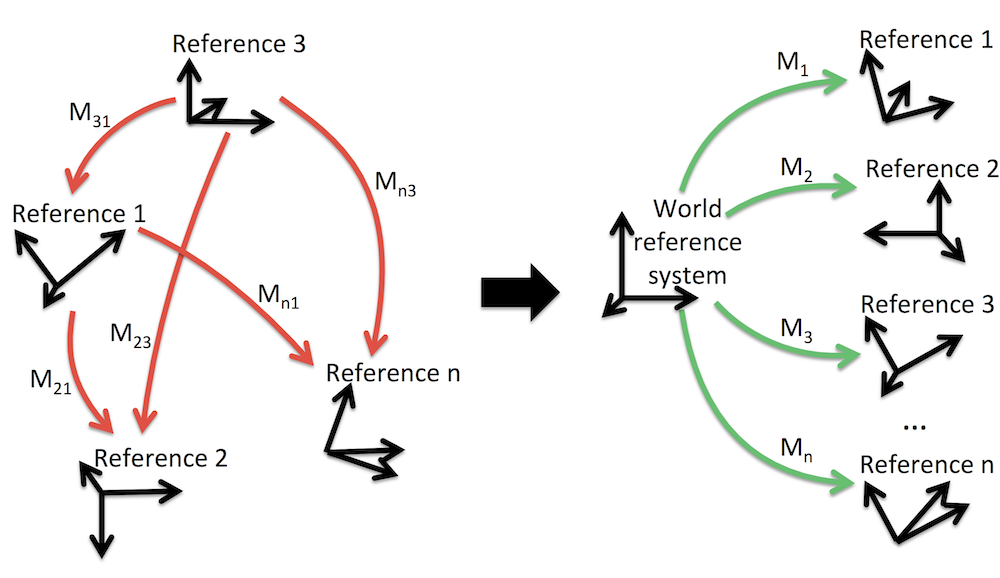

with F. Arrigoni, B. Rossi et al.
Consider a graph or network whose nodes can be cameras (or images, in Photogrammetry) or generic sensors. More abstractly, what matters is that a 3D reference frame (3 orthogonal axes with an origin) is attached to the node that represents its position and angular attitude. These two properties are collectively referred to as orientation in Photogrammetry or motion in Computer Vision or pose (customarily in Robotics). Mathematically, they are elements of the group of direct isometries, SE(3) (a.k.a. special Euclidean group). The links of this network (or edges of the graph) are relative measures of one node with respect to (some of) the others. The goal is to recover location and/or attitude of the nodes of the network (therefore we talk about ”network orientation” [Fraser, 2005]). The ”global” adjective means that we are interested in solutions that consider all the measurements at once, as opposed to ”incremental” approaches that grow a solution by adding pieces iteratively (such as resection-intersection in the context of structure-from-motion, or frame-to-mosaic registration).
When concentrating on the location part of the orientation, the problem is known as Sensor Network Localization (SNL), and in this context typically measures are either distances (TOA) or angles (AOA), also known as bearings. Correspondingly, we have a distance-based SNL or a bearing-only SNL. Localization can be seen also as a graph embedding problem, where the sought cameras|images|sensors locations correspond to an embedding in the 3D euclidean space of the network|graph.
When considering the attitude part of orientation described by a rotation (an element of SO(3)) the problem is also known as rotation averaging [Hartley et al., 2013] or registration [Martinec and Pajdla, 2007].
This ”averaging” problem can be generalized to any group, giving rise to the group synchronization problem (”synchronization” is used in the acceptation of [Giridhar and Kumar, 2006]), which can be stated as follows: given a graph where edge labels corresponds to noisy measures of the ratio of the unknown labels of adjacent vertices, find the vertex labels. According to the chosen group we have the following instances:
(rigid-)Motion synchronization (Fig. 1), can be regarded as a solution technique for network orientation where only relative transformations are used in the computation (no points, cfr. ”structureless bundle adjustment” [Cefalu et al., 2016]). It is the central stage of a structure-from-motion pipeline that starting from the epipolar graph (edges represent epipolar geometries or relative orientations) find globally consistent absolute orientations|motions for the cameras|images.

There are many interesting connections with: computer vision, sensor networks, automatic controls, robotics, graph theory (parallel rigidity), topography/surveying.
The first contribution of ours in this area dates back to [Fusiello et al., 2002] where we solved globally a registration problem in the context of the alignment of 3D sonar scans by minimization of a consistency cost function. That approach was inspired by an earlier paper [Davis, 1998] that solved a registration problem for affine transforms in the context of image mosaiking.
Some 15 year later, we faced the same problem again, motivated this time by the structure-from-motion problem. In [Arrigoni et al. 2014] we cast the rotation synchronization problem as a low-rank and sparse (LRS) decomposition.
The LRS approach have been applied to the synchronization of rigid motions in [Arrigoni et al., 2016c], which goes back to the roots as it deals with the alignment of 3D scans
As an alternative to the customary two step (rotation - translation) synchronization, in [Arrigoni et al., 2016a] we proposed a direct solution for the synchronization in SE(3) based on eigen-decomposition, which extends [Singer, 2011] that works in SO(3).
A crucial step in the localization problem is computing the epipolar scales, that are unknown due to the depth-speed ambiguity. Without knowing these scales the localization cannot be tackle as an instance of group synchronization (because relative translations are not fully specified) and must be solved as a bearing-only SNL. A pipeline that exploits our LRS rotation synchronization and [Brand et al. 2004] for localization is described in [Arrigoni et al., 2015a].
A solution for computing the epipolar scales was given in [Arrigoni et al., 2015b], concurrently to [Tron et al., 2015] who interestingly arrived at the same conclusions starting from a different framework. See also the article's web page.
Building on that result, a complete structure-from-motion pipeline based on group synchronization has been presented in [Arrigoni et al., 2016b].
Arrigoni, F. and Fusiello, A. Bearing-based Network Localizability: A Unifying View. In IEEE Transactions on Pattern Analysis and Machine Intelligence, 2018.
Arrigoni, F.; Rossi, B.; Fragneto, P. and Fusiello, A. Robust Synchronization in SO(3) and SE(3) via Low-rank and Sparse Matrix Decomposition. In Computer Vision and Image Understanding, 2018.
A. Fusiello, U. Castellani, L. Ronchetti, and V. Murino. Model acquisition by registration of multiple acoustic range views. In Proceedings of the European Conference on Computer Vision (ECCV), pages 805–819, 2002.[PDF]
F. Arrigoni, L. Magri, B. Rossi, P. Fragneto, and A. Fusiello. Robust absolute rotation estimation via low-rank and sparse matrix decomposition. In Proceedings of the International Conference on 3D Vision (3DV), pages 491–498, 2014. doi: 10.1109/3DV.2014.48.[PDF] [Code]
F. Arrigoni, B. Rossi, and A. Fusiello. Robust and efficient camera motion synchronization via matrix decomposition. In Proceedings of the International Conference on Image Analysis and Processing (ICIAP), volume 9279 of Lecture Notes in Computer Science, pages 444–455. Springer International Publishing, 2015a. [PDF]
F. Arrigoni, B. Rossi, and A. Fusiello. Spectral synchronization of multiple views in SE(3). SIAM Journal on Imaging Sciences, 2016a. To appear.[PDF] [Code]
Federica Arrigoni, Andrea Fusiello, and Beatrice Rossi. On computing the translations norm in the epipolar graph. In Proceedings of the International Conference on 3D Vision (3DV), 2015b. [PDF] [Code] [WWW]
Federica Arrigoni, Andrea Fusiello, and Beatrice Rossi. Camera motion from group synchronization. In Proceedings of the International Conference on 3D Vision (3DV). IEEE, 2016b.[PDF] [Code]
Federica Arrigoni, Andrea Fusiello, and Beatrice Rossi. Global registration of 3d point sets via LRS decomposition. In Proceedings of the 14th European Conference on Computer Vision (ECCV), 2016c. [PDF] [Code]
M. Agrawal. A lie-algebraic approach for consistent pose registration for general euclidean motion. In IEEE/RSJ International Conference on Intelligent Robots and Systems, pages 1891–1897, 2006.
M. Brand, M. Antone, and S. Teller. Spectral solution of large-scale extrinsic camera calibration as a graph embedding problem. In Proceedings of the European Conference on Computer Vision, 2004.
A. Cefalu, N. Haala, and D. Fritsch. Structureless bundle adjustment with self-calibration using accumulated constraints. ISPRS Annals of Photogrammetry, Remote Sensing and Spatial Information Sciences, III-3:3–9, 2016. doi: 10.5194/isprs-annals-III-3-3-2016.
A. Chatterjee and V. M. Govindu. Efficient and robust large-scale rotation averaging. In Proceedings of the International Conference on Computer Vision, 2013.
Mihai Cucuringu. Synchronization over Z2 and community detection in signed multiplex networks with constraints. Journal of Complex Networks, 3(3):469–506, 2015.
James Davis. Mosaics of scenes with moving objects. In Proceedings of the IEEE Conference on Computer Vision and Pattern Recognition, pages 354–360, 1998.
Clive Fraser. Network orientation models for image-based 3d measurement. ISPRS Archives, XXXVI-5/W17, 2005.
A. Giridhar and P.R. Kumar. Distributed clock synchronization over wireless networks: Algorithms and analysis. Proceedings of the IEEE Conference on Decision and Control, pages 4915–4920, 2006.
V. M. Govindu. Lie-algebraic averaging for globally consistent motion estimation. In Proceedings of the IEEE Conference on Computer Vision and Pattern Recognition, pages 684–691, 2004.
R.I. Hartley, J. Trumpf, Y. Dai, and H. Li. Rotation averaging. International Journal of Computer Vision, 2013.
Richard Karp, Jeremy Elson, Deborah Estrin, and Scott Shenker. Optimal and global time synchronization in sensor nets. Technical report, Center for Embedded Networked Sensing: University of California, Los Angeles, 2003.
D. Martinec and T. Pajdla. Robust rotation and translation estimation in multiview reconstruction. In Proceedings of the IEEE Conference on Computer Vision and Pattern Recognition, 2007.
Deepti Pachauri, Risi Kondor, and Vikas Singh. Solving the multi-way matching problem by permutation synchronization. In C. J. C. Burges, L. Bottou, M. Welling, Z. Ghahramani, and K. Q. Weinberger, editors, Advances in Neural Information Processing Systems 26, pages 1860–1868. Curran Associates, Inc., 2013.
W.J. Russel, D.J. Klein, and J.P. Hespanha. Optimal estimation on the graph cycle space. IEEE Transactions on Signal Processing, 59(6):2834 – 2846, 2011.
P. Schroeder, A. Bartoli, P. Georgel, and N. Navab. Closed-form solutions to multiple-view homography estimation. In Applications of Computer Vision (WACV), 2011 IEEE Workshop on, pages 650–657, Jan 2011.
A. Singer. Angular synchronization by eigenvectors and semidefinite programming. Applied and Computational Harmonic Analysis, 30(1):20 – 36, 2011.
A. Torsello, E. Rodola, and A. Albarelli. Multiview registration via graph diffusion of dual quaternions. In Proceedings of the IEEE Conference on Computer Vision and Pattern Recognition, pages 2441 – 2448, 2011.
R. Tron and R. Vidal. Distributed 3-D localization of camera sensor networks from 2-D image measurements. IEEE Transactions on Automatic Control, 59(12):3325–3340, 2014.
R. Tron, L. Carlone, F. Dellaert, and K. Daniilidis. Rigid components identification and rigidity enforcement in bearing-only localization using the graph cycle basis. In IEEE American Control Conference, 2015.
L. Wang and A. Singer. Exact and stable recovery of rotations for robust synchronization. Information and Inference: a Journal of the IMA, 2(2): 145–193, 2013.